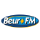

FranceRadios.org les Directs
Vous pouvez chercher dans ce tableau-catalogue vos stations préférées. Cliquez sur lien identifié pour commencer l'écoute du Direct
| Radio | Logo | Type | Description |
|---|---|---|---|
| 47fm Radio | Ecouter 47fm en live, retrouvez la grille de programmes détaillé de votre radio préférée ainsi que les infos utiles : téléphone, page facebook officielle et bien plus encore. 47 FM, la radio du Lot et Garonne. Ecoutez vos matchs de foot en direct et soyez au courant des dernières informations locales. Retrouvez les bons plans, les info culturelles, les idées sorties de la région. Mais aussi des jeux, la météo, des chroniques et de la musique bien entendu! |
||
| Radio Alouette | Régionale, Musicale | Alouette est une station régionale privée à dominante musicale très écoutée dans la région du Grand Ouest. Elle émet les hits du moements ainsi que les actualités régionales. Vous retrouvez le programme détaillé ci-dessous ainsi que les infos de contact. |
|
| Radio Azur FM | Régionale | Azur FM est une Radio Associative d’Alsace Elle diffuse Playlist de musique , le Top 10, l’actualité et l’agenda , météo, programmes TV, covoiturage, de la région. |
|
| Bac FM Radio | Lycéenne, Alternative, Rock | Bac FM la radio rock des lycéens de Nevers! Depuis 1989. Retrouvez le meilleur du rock et de la musique alternative! Mais c’est aussi du sport, l’actualité, des sciences, de la politique, des émissions culturelles et musicales, le tout animé par des animateurs scolaires! |
|
| Beur FM |  | Thématique | Beur FM est une radio thématique française créée en 1992. C’est la radio de la diversité par excellence: un lieu de débats et d’échanges, le tout dans un esprit de tolérance et de pluralité. Retrouvez le meilleur de la musique, des émissions culturelles et de société, et faites le plein de bonnes ondes!. |
| BFM Business Radio | Thématique, Economie | Pour conclure, BFM Business est la radio leader en affinité auprès des hauts pouvoirs de décision et des hauts pouvoirs d’achats plus précisément les fondateurs, PDG, DG, cadres dirigeants, et les foyers les plus riches de France. Elle est écoutée chaque jour par plus de 440 000 auditeurs. Elle offre pour cette raison un support de communication idéal et adapté aux annonceurs souhaitant atteindre cette cible. |
|
| Canal B | Une radio libre à Rennes et dans le monde grâce à sa webradio, avec de la musique pop, punk, reggae, hip-hop, ska et toute la chanson expérimentale que vous pouvez imaginer. Nous sommes impliqués dans la vie locale et socio-culturelle!. |
||
| Canal FM | Régionale | La radio locale de Maubeuge et sa région, avec des reportages régionaux, des services de proximité et un agenda culturel. Suivez notre programmation musicale 24h sur 24 et nos podcasts! |
|
| Cannes Radio | Régionale | Cannes Radio est une radio basée à Cannes. Elle propose une programmation variée: actualité régionale et nationale, agenda culturel et loisirs, météo, idées sorties, jeux… Musicalement, faites le plein de hits, de son clubbing, de house, de deep house et de lounge musique! |
|
| Champagne FM | Régionale | Infos locales et Trafic, c’est sur Champagne FM que ça se passe, 24 heures sur 24. La première radio indépendante de la région Champagne-Ardenne. Retrouvez le meilleur des tubes, les classements de la région, la voyance, etc…. |
|
| Chante France | Musicale | Chante France est une station de radio FM parisienne créée en 1994, ne diffusant QUE de la chanson française. Retrouvez le meilleur des tubes français des années 60 jusqu’à aujourd’hui! Faites le plein d’émotions!. |
|
| Chérie FM | Musicale, Pop Love | Radio Chérie FM, la station musicale pop et variétés. Laissez-vous emporter par les plus belles ballades, seul ou accompagné! Vous pouvez Dédicacer vos plus beaux messages d’amour en direct et écouter les interviews de vos chanteurs préférés sur les ondes de votre radio. |
|
| Radio Classique | Musicale | Radio Classique est une radio privée française musicale fondée en 1982. La radio diffuse principalement de la musique classique et d’informations, l’actualité économique et politique.La radio offrant le meilleur de la musique classique en France. Découvrez les meilleurs interprètes de vos morceaux classiques favoris. Suivez l’actu classique, les événements et notre agenda pour rester informé! La première radio de musique classique de France. Retrouvez l’actualité culturelle, politique, économique etc…le tout ponctuée du meilleur de la musique classique. Oubliez la modernité, retrouvez le classique. |
|
| Contact FM | Régionale | Contact FM c’est LA radio du Grand Nord. Ecoutez les dernières exclusivités mondiales. Tous les titres qui passent sur le dancefloor. Ne ratez rien et découvrez nos super mix! Réchauffez-vous en dansant sur les hits! |
|
| Wit FM | Régionale, Musicale | Wit FM, la radio qui diffuse tous les derniers hits. Ne ratez rien des nouveautés! Retrouvez dès votre réveil, de la bonne musique, des jeux et l’actualité locale(Aquitaine/Gironde) pour vous réveiller de bonne humeur et informé! |
|
| FIP Radio | Musicale | L’univers de Fip… Une radio musicale d’époque: jazz, chanson française, musiques du monde, pop-rock, blues, musiques électroniques, musique classique, bandes originales de films. Et cela depuis 1971! |
|
| France Culture | Thématique | Avec France Culture découvre le monde de l’information, de la littérature, de l’art, des spectacles, de l’histoire et des sciences. La radio qui rend plus intelligent. Depuis plus de 50 ans! |
|
| France Info | Information | France Info est une radio qui diffuse uniquement de l’information, analyses, actualité, débats et reportages. La radio date de 1987. France Info c’est de l’information non stop 24/24h: news du monde, finance, l’info trafic et météo. |
|
| FranceInter Direct | Généraliste | FranceInter est une radio généraliste par excellence. Les infos y sont programmées toutes les heures |
|
| Fun Radio | Musicale | La radio complètement fun : des sensations, des hits, des mix et du lourd! Envie d’une ambiance des meilleurs boîtes de nuit chez vous? Fun Radio toujours et encore plus fort. La station dancefloor de la rue Bayard s’en charge pour vous. Ouvrons-la sans limite. La radio existe depuis 1985. Pour revoir vos émissions préférées abonnez-vous à sa chaîne youtube |
|
| Hit West | Musicale | Hit West est une radio musicale française régionale qui émet dans l’ouest de la France, créée en 2001. Retrouvez le meilleurs des hits actuels, des Quizz de stars, le morning “West up’ “ avec Alexandra, Dolorès et Sévan en musique et avec de l’actu, l’info trafic, la météo et de la bonne humeur! Hit West est une station de radio française régionale musicale diffusée dans l’ouest de la France. Retrouvez le meilleur des hits, de la pop internationale et made in France. Mais aussi des jeux, des émissions de divertissement, l’horoscope… |
|
| Jazz Radio | Musicale | Jazz Radio est une station de radio française basée à Lyon, créée en 1996. Comme son nom l’indique, la radio est surtout dédiée au jazz, mais elle dispose d’une programmation variée : du jazz, de la soul, du funk, du blues, du jazz manouche ou encore du gospel. La première radio de Jazz en France! |
|
| Mouv | Musicale | Radio pour les jeunes avec une grille musicale généraliste visitant le rock, la pop, le metal, en passant par l’electro, le r’n‘b, le hip-hop, la soul, le reggae pour finir par la chanson française! En n’oubliant pas l’actu et l’humour! |
|
| RTL2 | Musicale | Le meilleur du son Pop-Rock depuis 1992, retrouvez les meilleurs titres dénichés par les petits soins de Zégut. Les émissions de Louise Ekland et de Johann Roques. Sans compter vos “mornings” favoris! |
|
| Nostalgie | Musicale | La radio pour retrouver tous les classiques français et autres. Réécoutez vos morceaux favoris et voyagez à travers le temps. Nostalgie, la radio des grands artistes. |
|
| NRJ Radio | Ecouter NRJ Direct en live, retrouvez le programme détaillé de votre radio préférée au format pdf ainsi que les infos utiles : téléphone, page facebook officielle et bien plus encore. Retrouvez tous les derniers Hits et les numéros 1 dans les classements, les meilleurs DJ du moment et les émissions les plus fun. NRJ la radio “number one”, sur les ondes depuis 1984. |
||
| Oui FM | Musicale | LA radio du Rock! Des classiques aux plus récents, vous découvrirez ou redécouvrirez les tubes qui vous feront pogoter jusqu’à ce que mort s’en suive. Du rock, du blues et de la musique indépendante, pour le plaisir de vos oreilles! |
|
| FG Radio | Musicale | La radio des tendances électro, house et dance avec les plus grands DJ du monde. Retrouvez les meilleur mix des titres du moment. Des playlist de dingue pour vos soirées! |
|
| Radio Canut | Associative | Radio Canut est une radio associative qui diffuse ses programmes à Lyon et dans son agglomération, sur la fréquence 102.2 FM. Radio historique du quartier des pentes de la Croix-Rousse, elle a pour slogan « Radio Canut, la plus rebelle des radios ! ». Elle est installée au 24 de la rue du Sergent-Blandan, dans le 1er arrondissement de Lyon. Radio Canut est une association régie par la loi du 1er juillet 1901 et dont les statuts ont été déclarés à la préfecture du Rhône le 27 septembre 1981. Elle tient son nom des canuts, ouvriers de la soie lyonnais. |
|
| Radio Caroline | Généraliste | Radio Caroline est une station de radio qui diffuse en Bretagne dont le siège est à Rennes en France et qui combine les musiques des années 1980 aux hits d’aujourd’hui avec un accent particulier mis sur les talents régionaux et celtiques. Suivez Radio Caroline en direct sur nos players. |
|
| Radio Courtoisie | Associative | Radio Courtoisie est une station de radio associative française. Fondée en 1987 par Jean Ferré, héritière de Radio Solidarité, elle est exploitée par l’association « Comité de défense des auditeurs de Radio Solidarité » et diffuse notamment en région parisienne et dans cinq villes de province. Se définissant comme « la radio libre du pays réel et de la francophonie », elle est, selon son fondateur, ouverte à tous les talents et, en politique, à toutes les droites. Pour les observateurs politiques, elle est classée tantôt à droite, tantôt à l’extrême droite. |
|
| Radio Cristal | Régionale, Musicale | Radio Cristal est une station de radio française régionale musicale privée de catégorie B diffusée en Normandie et dans une partie des Yvelines. Elle est l’une des cinq radios de Précom (Groupe SIPA - Ouest-France). Le directeur de Cristal est Yann Oger. Radio Cristal est aussi une station de radio française régionale musicale diffusée en Normandie et dans une partie des Yvelines. Depuis 1982. Retrouvez le meilleur des hits, des jeux, l’actualité locale, l’horoscope, des chroniques et surtout…de la bonne humeur! |
|
| Radio D'ici | Associative, Régionale | Fidèle à l’esprit initial de la lutte pour la libération des ondes, Radio d’Ici constitue un média interactif qui se consacre à la communication sociale et à l’éducation populaire. Indépendante des pouvoirs politiques et financiers, Radio d’Ici se veut plurielle sur le plan social, communautaire et culturel. Elle est un lieu de rencontre et d’échange pour les différentes classes sociales, générations et communautés de son bassin d’écoute. Sur le plan politique, elle n’est pas l’expression d’un parti et pratique donc le pluralisme et l’expression de tous, dans le cadre fixé par la loi. |
|
| Radio Dreyeckland | Régionale, Musicale | Radio Dreyeckland est une station de radio française privée basée à Mulhouse en Alsace. Radio musicale, elle diffuse de la variété française et internationale des années légendes ainsi que des artistes germaniques. Radio Dreyeckland est une radio adhérente au groupement des Indés Radios commercialisé par TF1 Publicité. Dreyeckland a fait ses débuts dans le pays des trois frontières (sud de l’Alsace) d’où son appellation (littéralement « Dreyeckland » veut dire « Triangle pays »). Le slogan de Radio Dreyeckland est « Vos plus belles chansons ». |
|
| Radio Emotion | Régionale, Musicale | Radio Émotion est une radio locale émettant sur la côte d’azur. Retrouvez le meilleur de l’actualité locale, du divertissement, l’agenda culturel, les associations à la une, la vie entrepreneuriale de la région et le meilleur des hits et de la musique, des années 60 aux années 80! |
|
| Radio Espace | Régionale, Musicale | Radio Espace est une station de radio locale française appartenant à Espace Group, dont le siège est à Lyon. Elle diffuse principalement de tubes dance, R&B et groove. Son slogan est « La plus Lyon des radios ». Elle est membre du SIRTI. Réveillez-vous avec “Le + Lyon des Mornings” en compagnie de Pierre et de Bérénice! |
|
| Radio Orient | Communautaire | Radio Orient (et en arabe : Izzat al Charq) est une station de radio française émettant depuis Clichy, depuis 1982. Nous proposons des émissions culturelles, sur la santé, l’éducation, le couple… le meilleur de la musique arabe actuelle, l’actualité nationale et internationale (en français et en arabe), la politique, la religion, etc … |
|
| RFI | Généraliste | Radio France Internationale est une radio publique d’information qui diffuse à Paris et partout dans le monde. RFI émet 24 heures sur 24, 7 jours sur 7, dans le monde entier en français et dans 12 autres langues! Retrouvez toute l’information internationale où que vous soyez! |
|
| Voltage | Régionale, Ile de France | Voltage est une station de radio régionale française diffusée sur Paris et en Île-de-France. Elle s’adapte au quotidien des franciliens avec une programmation axée sur l’actualité, les bons plans sorties, les services et le meilleur des hits! |
|
| Rire & Chansons | Musicale & Sketches | Envie de rire? Ne cherchez pas plus loin. Rire et Chansons, la radio avec les meilleurs humoristes et d’agréables pauses musicales. La radio du rire depuis 1989.. |
|
| Virgin Radio France | Musicale | Virgin Radio est une radio privée française musicale qui a succédé à Europe 2 depuis le 1er janvier 2008. Virgin, c’est le meilleur de la pop, du rock et de l’électro tout au long de la journée…et de la nuit! Mais aussi des informations, l’actualité des artistes et des jeux concours! |
|
| Skyrock FM | Musicale RAP | Radio Libre à l’origine, Skyrock est une station musicale spécialisée dans le RAP. Sa programmation se distingue par ses animations et jeux avec des concepts originaux et pariticipatifs pour gagner plein de cadeaux : billets de concerts, voyage et des sommes d’argent en cash. Ne perdez plus de temps, écouter le live en direct. |
|
| MFM | Musicale | MFM Radio est une station de radio musicale française, ses locaux et studios sont situés à Lyon. Elle ne diffuse que de la chanson française, depuis 1981! Retrouvez le meilleur des tubes d’hier et d’aujourd’hui, de l’hexagone!. |
|
| RMC Live | généraliste | RMC Live Info Talk Sport est une radio très populaire en France. Sa grille de programmation principalement composée d’information, de talk, de directs d’évènements sportifs surtout du Football animés par des consultants qui sont des champions ou des entraineurs de renommée. |
|
| RTL | généraliste | RTL (Acronyme de Radio Télé Luxembourg) est une station très écoutée en France. Elle diffuse des émissions conviviales et proche du public et particulièrement les nouveautés musicales et les grands hits. |
|
| Europe 1 | généraliste culturelle | Radio généraliste d’informations et d’actualité, de débats politiques, culturels, d’économie, de sport en France et à l’international par une équipe jeune et dynamique. Créée le premierer janvier mille neuf cent cinquante cinq a réussi à capter une audience large. Retrouvez le meilleur de la culture, de la politique, de l’humour, de l’actualité et beaucoup plus, sur nos ondes! Avec nos animateurs de choc, vous ne risquez pas de vous ennuyer! |
|
| RFM | RFM Radio France Musicale, “la radio couleur” (fondée le 12 juin 1981) est créée dans la vague des radios libres apres l’élection de François Mitterrand a la Présidence de la République. Le slogan de RFM devient “Le meilleur des années 80 a nos jours”.. |